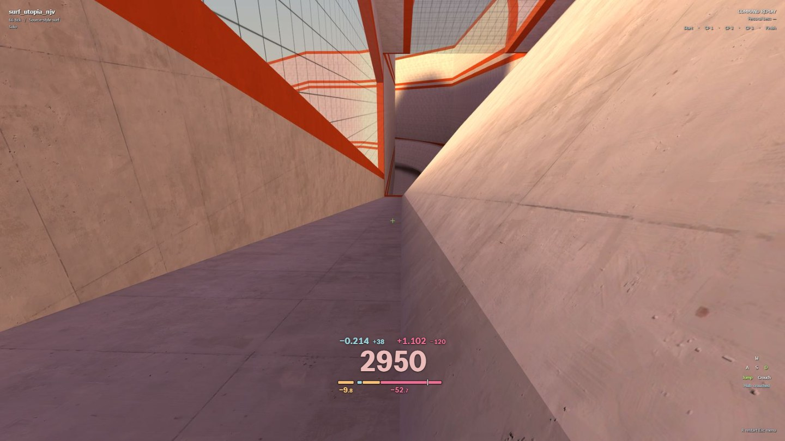
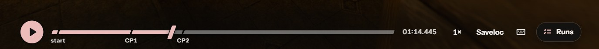
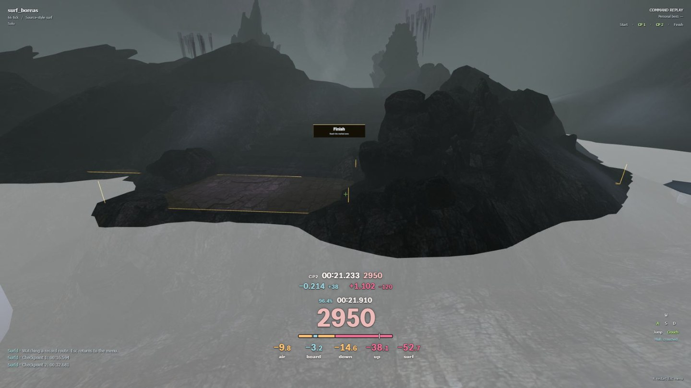
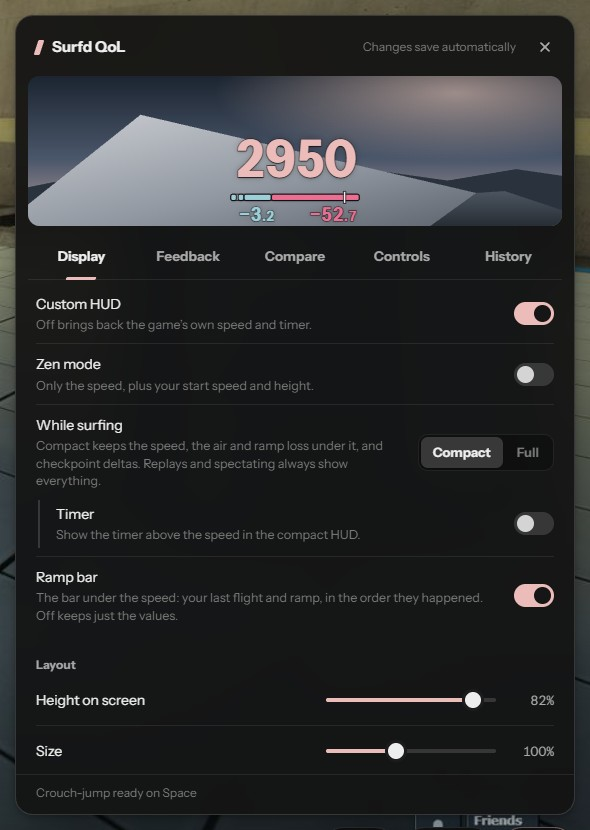

See where your speed goes.
Surfd QoL is a Chrome extension for surfd.net. See where you lose speed on each ramp and in the air, review the moment in a replay, then try the section yourself.
Choose the feedback you want, with a configurable HUD, replay tools and local run history.
Desktop Chrome 118 or newer.

Install
It isn't on the Chrome Web Store, so you load it into Chrome yourself.
- Download the zip and unzip it.Keep the unzipped folder somewhere it can stay; Chrome loads the extension from it.
- Open
chrome://extensionsPaste it into the address bar, then switch on Developer mode in the top right. - Click Load unpacked and pick the unzipped folder.It's the folder that contains
manifest.json. - Open surfd.net.The tab reloads once while the extension hooks in. Settings are under QoL, bottom right of the game menu.
Chrome will show a “started debugging this browser” bar. The extension needs the debugger permission to read the game's physics, and only attaches to surfd.net. You can close the bar; everything keeps working until you reload.
Updating
A link above Runs and QoL in the game menu lets you know when a new version is available. Chrome won't install it automatically.
- Download the latest zip and unzip it.Replace the contents of the extension folder you already loaded into Chrome.
- Reload the extension, then refresh Surfd.Open
chrome://extensionsand click the reload icon on Surfd QoL. Your settings and saved runs stay in this browser.
Replays and run history
Use Surfd’s replay player with savelocs and Runs added to it, or switch to the custom timeline below. Both work on your recorded runs, leaderboard replays and the KSF record route.
- Practice from a replay
- Save a position with Saveloc or your usual save bind, then leave the replay and load it in practice to try the section yourself.
- Local run history
- Open Runs for your latest attempt, recent runs, best recorded finish and recent best. In Ramps, compare your best, last 10 measurements or average with your PB or the WR, then click a ramp to watch it. Recording and storage settings are under QoL → History.

What the numbers mean
Each value stays up until the next ramp or flight replaces it, so you can read it in the air instead of mid-ramp. All of them are in units per second.
- Board
- Speed clipped off as you land on a ramp. Height conversion doesn't count.
- Down
- What the ramp cost from boarding to the lowest point you touched.
- Up
- What it cost from the lowest point to where you left the ramp. Down and Up add up to the whole ramp.
- Air
- Your last flight: speed lost to braking plus gain missed by imperfect strafes. Shows in Down's place when you land.
- As good as the reference or better
- A little worse
- Worse
- No matching reference
You choose what to compare against: the KSF record route (the default), Surfd's leaderboard #1, or your own PB. Even the record loses real speed on most ramps, so the comparison tells you more than the raw number.

Settings
- Turn any value on or off; the rest re-centre.
- Zen mode for just speed and brief start stats, without hiding the replay’s hull indicator.
- Move, resize and recolor the HUD with a live preview.
- Grade each value against fixed targets, your PB, the KSF record or Surfd's #1.
- Optional crouch-jump on any key: one tick of crouch per jump.
- Optional nullbinds for left/right and forward/jump, following your game's movement bindings.
- Speed counter and timer refresh rates, so digits stay readable.
The game's physics and timing stay unchanged. Settings and recorded runs stay in your browser. Hidden feedback skips its analysis.
